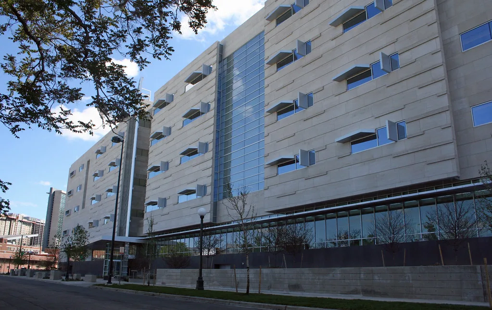

공소청 출범 후 첫 국정감사…'李 공소취소' 최대 쟁점으로
국회 법제사법위원회가 22일 오전 10시부터 공소청에 대한 국정감사를 실시했다. 지난 10월 2일 대검찰청이 폐지되고 공소청과 중수청이 새로 출범한 이후 처음 열리는 본청 국정감사라는 점에서 조직 개편 이후 첫 성적표를 받는 자리로 주목받았다. 법사위를 비롯해 이날은 과학기술정보방송통신위원회 등 10개 상임위원회가 동시에 국정감사를 진행하며 국회 전체가 바쁘게 돌아갔다. 78년 역사의 검찰청이 폐지되고 기소와 수사 기능이 분리된 지 채 한 달이 되지 않은 시점이어서, 새 체제가 실제로 어떻게 작동하고 있는지를 점검하는 자리라는 의미도 함께 부여됐다.
이날 감사의 최대 쟁점은 이재명 대통령 관련 형사사건에 대한 공소취소 여부였다. 검찰총장 직무대행을 겸하고 있는 이정현 공소청 차장검사가 출석해 관련 입장을 밝힐 것으로 예상되면서 여야 의원들의 질의가 집중됐다. 이 차장검사는 앞서 취임 직후 공소취소 문제에 대해 "진상조사 결과를 살펴봐야 한다"는 신중한 입장을 밝힌 바 있어, 이날 국감에서 보다 구체적인 입장 변화가 있을지가 관심사로 떠올랐다.

공소취소 문제와 함께 공소청의 수사 기능을 다른 기관으로 이관하는 방안도 주요 의제로 다뤄졌다. 검찰청 폐지와 공소청·중수청 분리 출범이라는 큰 틀의 조직 개편이 이뤄진 지 3주가 채 지나지 않은 시점이어서, 수사와 기소 기능을 어떻게 나누고 운영할 것인지에 대한 구체적인 그림이 아직 정리되지 않았다는 지적이 여당과 야당 양쪽에서 함께 제기됐다.
야당 의원들은 이재명 대통령 관련 사건의 공소가 취소될 경우 재판 자체가 무력화되는 만큼, 이를 신중하게 결정해야 한다는 점을 집중적으로 따졌다. 반면 여당 의원들은 검찰 과거 수사 과정에서 제기된 각종 절차적 문제를 거론하며 조직 개편의 필요성을 강조하는 데 질의 시간을 할애했다. 이 과정에서 과거 쌍방울 대북송금 사건 수사 당시 있었던 회유 의혹 등 민감한 사안도 다시 소환됐다.
이와 별개로 검사 징계 문제와 특정 사건 수사 과정에서의 적절성 논란도 이날 감사에서 함께 다뤄졌다. 공소청이 출범 초기인 만큼 아직 자리를 잡지 못한 업무 분장과 인력 운용에 대한 질의도 이어졌다. 여야 모두 새 조직이 안정적으로 자리잡을 수 있도록 제도적 보완이 필요하다는 데는 공감대를 이뤘지만, 구체적인 방법론을 두고는 입장차가 뚜렷했다.
공소청 국감과 맞물려 초대 공소청장 후보에 대한 국민 천거 절차도 최근 마감된 것으로 전해졌다. 신임 공소청장이 누구로 정해지느냐에 따라 공소취소를 비롯한 주요 현안에 대한 조직의 입장이 달라질 수 있다는 점에서, 인선 작업 자체가 이번 국감의 또 다른 변수로 거론됐다. 여야는 향후 인사청문 절차에서도 공소취소 문제를 두고 다시 공방을 벌일 가능성이 높다는 관측이 나온다.
국회는 이번 공소청 국감을 시작으로 이어지는 상임위별 종합감사에서도 비슷한 쟁점들이 반복적으로 다뤄질 것으로 전망하고 있다. 특히 이재명 대통령 관련 사건의 공소취소 여부는 향후 정치권 공방의 핵심 변수가 될 수 있다는 점에서, 공소청이 내놓을 최종 입장에 관심이 집중되고 있다. 조직 개편 초기의 혼란을 어떻게 수습하고 안정적인 운영 체계를 갖춰나갈지, 그리고 신임 청장 인선이 이 과정에 어떤 영향을 미칠지도 함께 지켜봐야 할 대목이다.